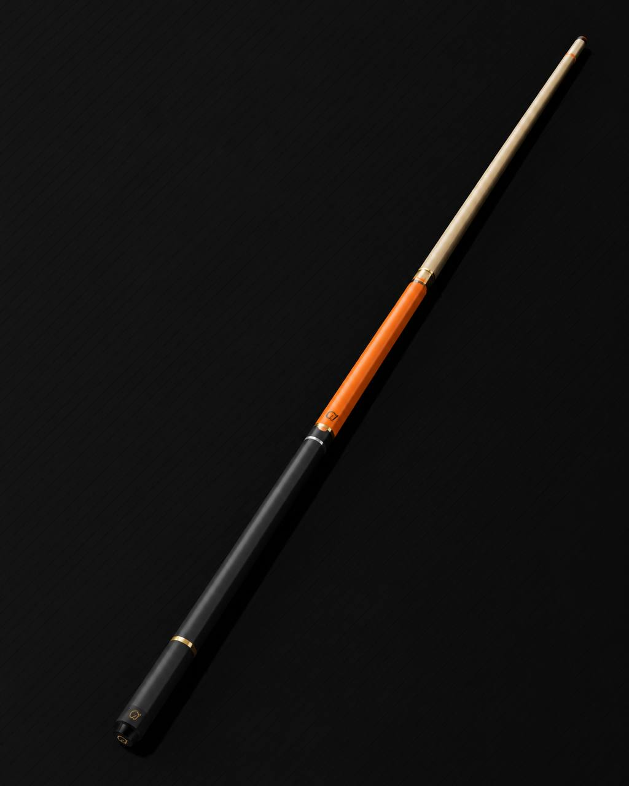

PLAY
TRUE.
Balance, taper, joint feel, and finish chosen around how you actually play—not a one-size rack cue.

BESPOKE POOL CUES / BUILT TO PLAY / MADE TO KEEP
Calitoy Cues builds performance-minded custom pool cues with a point of view—balanced in the hand, precise at the table, and unmistakable in the room.

NOT A WALL HANGER.
A great cue answers before you ask. It settles into your bridge hand, carries through the stroke, and makes the next shot feel possible. We start there—then make it beautiful enough to keep forever.
Balance, taper, joint feel, and finish chosen around how you actually play—not a one-size rack cue.
Color, grain, wrap, rings, and details that make the cue feel like yours before the first rack.
Small-run and one-of-one builds for players who know a cue can be both a tool and an heirloom.
THE FIRST RACK
Start with a clean build. Take it as far as your game and taste want to go.
Clean, direct, all game.
Statement color. Serious stroke.
Material, finish, and story with no repeat.
Tell us how you play, what you play with now, and what you want to change.
We define the cue direction: feel, materials, visual language, and intended use.
Wrap, balance, finish, and the little choices that turn a cue into yours.
Your cue arrives ready to play, ready to live with, and ready for the next run.
04 / START A CUSTOM
Give us the game, the look, and the feeling. We’ll start the right conversation.